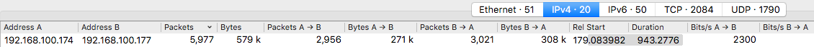
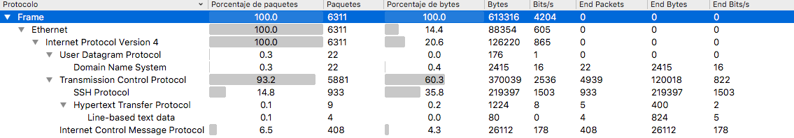
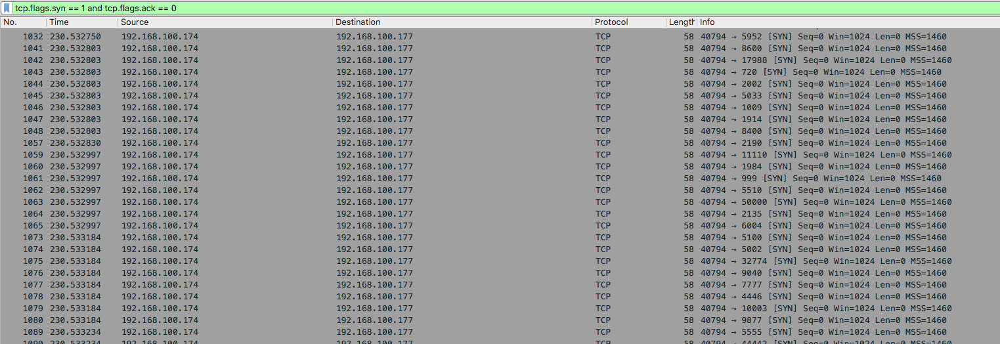
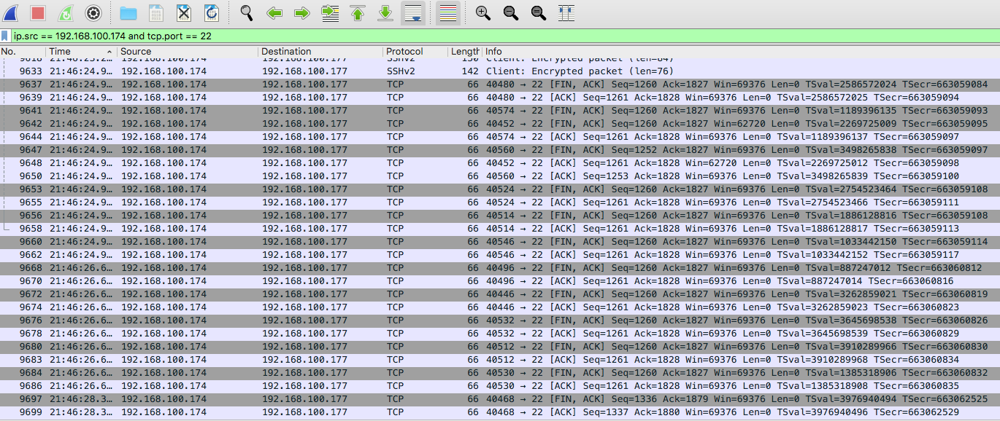
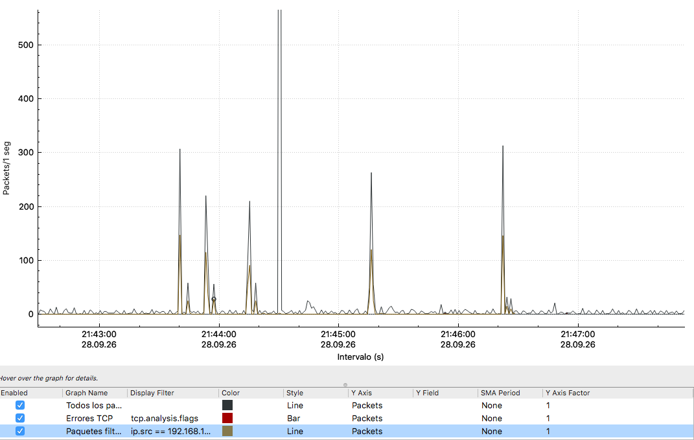
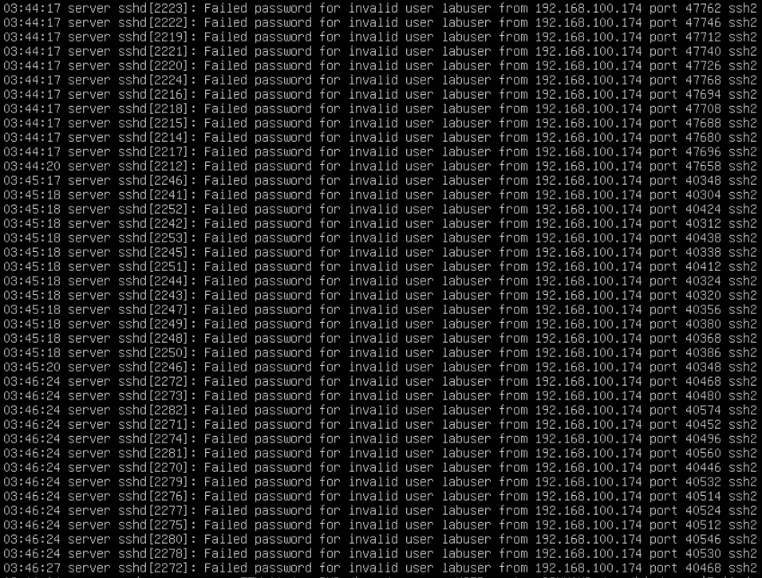
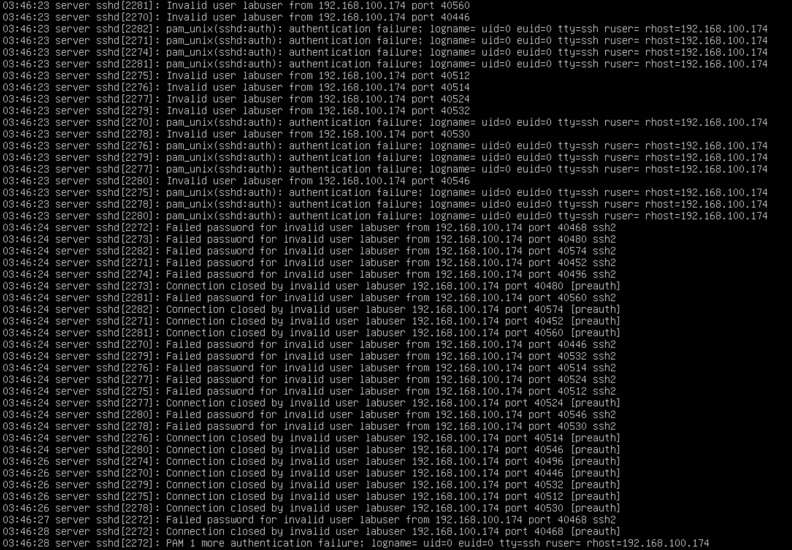
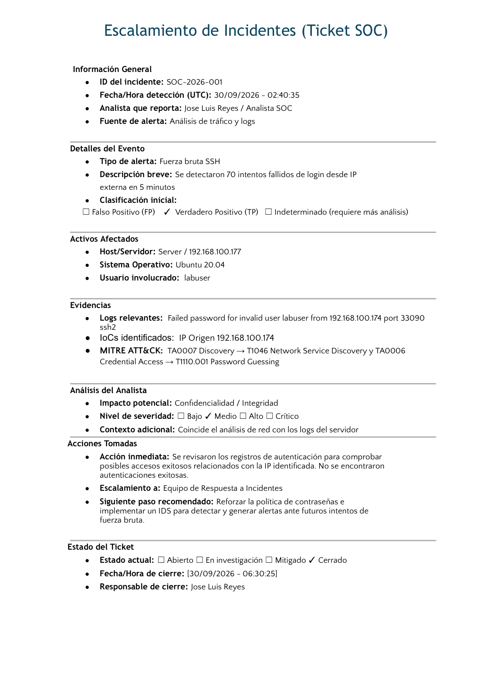

Laboratorio propio
Investigación de actividad sospechosa en SSH
30 Sep 2026
Objetivo
Analizar un archivo PCAP generado en un entorno controlado para identificar actividad sospechosa en la red. Durante la investigación se analizará el tráfico con Wireshark y se correlacionará con los registros de autenticación del servidor para determinar si existieron intentos de acceso no autorizados.
Entorno del laboratorio
Para realizar el análisis se utilizó un entorno controlado compuesto por una máquina Kali Linux y un servidor Ubuntu.
Kali Linux
192.168.100.174
Equipo de pruebasUbuntu Server
192.168.100.177
Servidor SSHWireshark
Archivo PCAP
Análisis de tráficoInvestigación
Se recibió un archivo .pcap para realizar un análisis del tráfico de red. Durante la revisión de la sección de Conversaciones de Wireshark, se identificó una comunicación significativa entre las direcciones IP 192.168.100.174 y 192.168.100.177. La dirección 192.168.100.174 generó tráfico hacia el servidor interno 192.168.100.177, por lo que se decidió analizar con mayor detalle la actividad asociada a esta comunicación.

En la sección de Jerarquía de Protocolos se puede observar que la mayor parte del tráfico corresponde al protocolo TCP. También se identifica una cantidad importante de tráfico SSH, por lo que se decidió revisar con mayor detalle las conexiones relacionadas con este protocolo.

Indagando más sobre esta conexión, se aplicó un filtro para identificar paquetes SYN del protocolo TCP y comprobar si se había realizado un escaneo al servidor local. Se puede observar que la IP 192.168.100.174 realiza múltiples solicitudes de conexión hacia diferentes puertos de la IP 192.168.100.177, utilizando el mismo puerto de origen 40794. Debido a este comportamiento, se puede considerar que existe evidencia de un posible escaneo de puertos al servidor.

También se puede observar que hubo múltiples intentos de conexión al puerto 22, realizados en periodos de tiempo muy cortos y provenientes de la misma dirección IP. Este comportamiento puede estar relacionado con un posible ataque de fuerza bruta o password spraying, por lo que es necesario revisar los registros de autenticación para determinar qué tipo de actividad se realizó.

Por último, en las gráficas se puede observar un incremento en la actividad de red durante los periodos en los que la IP 192.168.100.174 realizó conexiones con el servidor local 192.168.100.177.

Después se ingresó al servidor para comprobar si existía alguna correlación con la actividad observada en el tráfico de red. Al revisar el archivo /var/log/auth.log, se encontraron 70 intentos fallidos de autenticación SSH provenientes de la IP 192.168.100.174, la misma dirección identificada anteriormente en el archivo PCAP..

Posteriormente, se filtró la IP 192.168.100.174 dentro del archivo auth.log para buscar posibles autenticaciones exitosas relacionadas con esta dirección. Sin embargo, no se encontraron accesos exitosos, únicamente intentos fallidos de autenticación SSH.

Con la información obtenida del tráfico de red y los registros del servidor, se puede determinar que hubo múltiples intentos de autenticación SSH desde la IP 192.168.100.174, pero no se encontró evidencia de que alguno de estos intentos lograra acceder al servidor.
Ticket SOC
Con base en la evidencia recopilada durante la investigación, se documentó el incidente en un ticket SOC para registrar los hallazgos, la clasificación y las acciones recomendadas.
